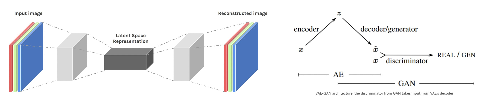

Beautiful Art vs Terrifying Deepfakes
Cet article présente les applications liées aux réseaux antagonistes génératifs ainsi que les conséquences sur notre quotidien
“The thing about quotes from the internet is that it is hard to verify their authenticity”
Abraham Lincoln*
Grenouille, to be or not to be ?
Pont du Golden Gate dans le style de Van Gogh
Comme nous avons pu le voir sur le graphique de l'introduction, depuis 2016, le nombre d'articles scientifiques portant sur les GANS a crû exponentiellement. Ainsi beaucoup de premières applications liées à ces derniers ont été développées, d'abord dans la recherche. Cependant, petit à petit, on observe de plus en plus de mise en production de GAN, en tant que solution technologique, dans l'industrie (au sens large).
Dans le domaine de la recherche, tout d'abord, plusieurs grands types de réseaux génératifs antagonistes ont émergés au fil des années. Ici, on se concentrera sur trois types en particulier :
- Variational Auto-Encoder GAN, qui permet d'encoder l'information prise en entrée sous forme d'une vecteur condensé et notamment la génération d'images à l'aide de simple opérations arithmétiques;
- Conditional GAN, des réseaux antagonistes qui génèrent également des output à partir de bruit blanc mais conditionnellement à un input comme du texte ou des contraintes physiques;
- Cycle GAN qui permettent notamment de transférer un style entre deux images.
VAE-GAN
Les auto-encodeurs sont un type spécifique de réseaux de neurones dont l'entrée se veut être la même que la sortie. Ils "compressent" l'entrée en une forme vectoriel de dimension moindre à l'aide de l'encodeur et reconstruisent ensuite la sortie à partir de cet espace de représentation que l'on appelle le latent-space à l'aide du décodeur. Le vecteur au sein du latent-space est un "résumé" compact de l'entrée, également appelé latent-space representation.

Tout l'intérêt des VAE-GANs c'est qu'il est ensuite possible de générer par exemple des images non plus à partir de bruit blanc mais à partir de cette représentation d'une entrée au sein du latent-space. Ainsi les images re-générées seront de plus en plus fidèles aux images d'entrée. Un des attraits de cette technique repose principalement sur les propriétés intéressantes qui découlent de l'utilisation du latent-space. Il est en effet possible de réaliser des opérations arithmétiques entre les représentations vectorielles des différents inputs afin de générer de nouvelles formes. Ainsi, dans l'image suivante, il devient possible, à partir de trois designs de chaises, de générer un nouveau design complétement unique.
En utilisant ces mêmes propriétés liées au latent-sapce, il est possible d'apprendre la structure 3D de données d'entrée seulement à partir de leur représentation 2D. Ensuite, l'utilisation de GANs permet d'appliquer des changements grossiers, moyens ou fins sur les données générées. Cela est rendu possible en réalisant des translations au sein du latent-space dans la direction d’un style donné. Dans la vidéo suivante, cela est mis en place sur des voitures et des chambres d'hôtels.
Une application très intéressante des VAE-GANs est de pouvoir générer des images réalistes à partir d'une carte sémantique comme représenté sur le gif suivant. En effent, il faut savoir que les systèmes utilisés dans les voitures autonomes transforment les images capturées en temps-réel en cartes sémantiques. Ainsi en effectuant le chemin inverse et en réalisant des images et vidéos réalistes d'environnements routiers urbains à partir de cartes sémantiques il devient possible d'entraîner les systèmes au sein de ces voitures autonomes sans même sortir la Google Car du garage.

Conditional GAN
Dans un modèle génératif non conditionné, il n'y a aucun contrôle sur les modes des données générées. Dans un GAN conditionnel (CGAN), le générateur apprend à générer un faux échantillon avec une condition ou des caractéristiques spécifiques (comme une étiquette associée à une image ou une étiquette plus détaillée) plutôt qu'un échantillon générique à partir d'une distribution de bruit blanc. Ces modèles fonctionnent sur une grande variété de problèmes. Pour y répondre on a souvent besoin de la même architecture et on utilise la même fonction objectif. Il convient simplement de s'entraîner sur des données différentes. Ainsi, on peut, par exemple, générées des images d'oiseaux conditionnellement à du texte comme dans l’article de Reed Scott et al. Une publication ultérieure de Han Zhanget al. datant de 2017 propose une solution pour améliorer nettement la résolution des images en sortie, en appliquant une deuxième série de GAN à cet effet, comme le montre la figure suivante. L'idée est cependant la même : fournir un texte et générer une image réaliste et représentative de ce texte. Les résultats obtenus sont plutôt convaincants.
Cycle GAN
Image-to-image translation est une classe de problèmes graphiques et visuels dont l'objectif est d'apprendre la correspondance entre une image d'entrée et une image de sortie en utilisant un ensemble de paires d'images. Toutefois, pour de nombreuses tâches, les données ne seront pas appariées. Ainsi les Cycle GANs sont une approche pour apprendre à "translater" une image d'un domaine source X vers un domaine cible Y en l'absence d'exemples couplés. Le but est ici d'apprendre une cartographie G:X→Y de sorte que la distribution des images de G(X) ne puisse être distinguée de la distribution Y en utilisant des GANs. Parce que cette cartographie est fortement sous-contrainte, elle est couplée avec une cartographie inverse F:Y→X qui introduit la notion de perte de cohérence de cycle afin que F(G(X)) ≈ X et vice versa.

Les applications possibles sont diverses et notamment pour les tâches où il n'existe pas de données couplées comme le transfert de style, la transfiguration d'objets, le transfert de saison, l'amélioration des photos, etc.

Les importants progrès faits à travers les différentes architectures de GANs ainsi que les résultats prometteurs ont vite poussé la mise en place d'utilisations artistiques et industrielles dans le domaine du design génératif notamment.
Industrie & Art - Design génératif
Sneakers : $299 - 2016
The DreamCatcher Project by AutoDesk
Design industriel Industrie automobile, aéronautique entre autres : marchés énormes logiciel d’assistance au design par ordinateur dev par autodesk : cGAN + opération arithmétique dans latent space 0’ → 1’05 0’55 pause → capteurs voitures → contraintes → optimisation → chassis plus performant et léger ensuite génération d’une cloison pour airbus : aussi solide MAIS 2x fois plus légère → alléger les avions, performances vis à vis du fuel Design by Data - MS depuis 2016 aux Ponts
Industrie de la mode - Make-up transfer by Nabla
Marché mode, cosmétique cycle GAN Rmq : juste transfert de maquillage, couleurs des cheveux inchangés + (important car plus difficile) couleur de peau inchangé

Génération pour les jeux vidéos
cGANs Les jeux vidéo sont devenus de vrais blockbusters avec des budgets dignes des productions hollywoodiennes. GTA, Call of Duty cout de prod entre $200 et $300M pour les plus chers Dans la course au réalisme et à l’immersion, les studios investissent des budgets significatifs pour créer des maps tentaculaires et des nouveaux décors qui permettent à chacun d’explorer le jeu de façon inédite tout en réduisant les coûts de développement.
Behind the scenes - Evil AI ?
Au final, les GANs ça a l’air génial, toutes ces applications ont l’air bénéfiques mais n'y’a-t-il que ça ?
Influencer les opinions - Parallèle Cambridge Analytica et les fake news en général
Cybersecurité : créer des adversarial malwares capable de tromper un système de détecter même inconnu
Hacker système de voiture autonome pour le tromper qu’à la signification des panneaux. Précédemment argent et données privées de perdues → la vie de perdue Futur (as usual) Nécessité d’adaptation → systèmes malveillants meilleurs → système de défense meilleurs etc